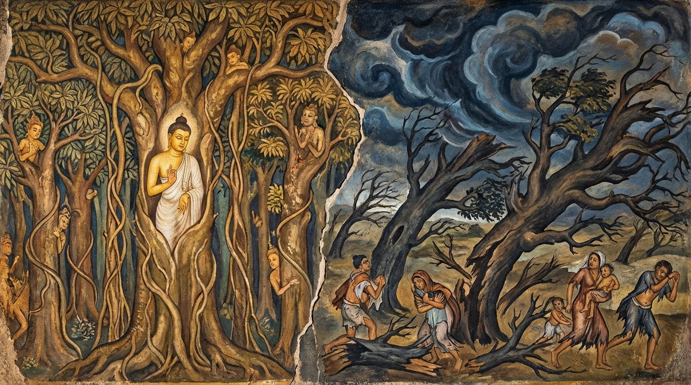

4. රුක්ඛධම්ම ජාතකය (74)
“සාධූ සම්බහුලා ඤාතී” යන මේ ජාතක දේශනාව බුදුරජාණන් වහන්සේ ජේතවනාරාමයෙහි වැඩ වාසය කරන සමයෙහි වදාළ සේක. එය ජලය බෙදා ගැනීමේ කලහයක් නිසා තමන්ගේ නෑයන්ට මහා විනාශයක් එළැඹි බව දැන, අහසින් වැඩමවා රෝහිණී ගංගාවට ඉහළ අහසෙහි පලක් බැඳ වැඩ හිඳ, නිල් රැස් විහිදුවා, නෑයන් සංවේගයට පමුණුවා, අහසින් බැස ගංතෙරෙහි වැඩසිට දේශනා කරන ලද්දකි. ඒ කලහය අරබයා මේ ජාතකය දේශනා කළහ. මේ එහි සංක්ෂිප්තයයි. මෙහි විස්තර කථාව කුණාල ජාතකයෙහි (ජා· 2.21) ප්රකට වන්නේය. එකල්හි බුදු රජාණන් වහන්සේ නෑයන් අමතා, “මහරජවරුනි, ඔබ සියල්ලෝ නෑයෝය. නෑයෝ නම් සමගි ව සතුටින් සිටිය යුත්තෝය. නෑයන් අතර සමගිය ඇති කල්හි සතුරෝ අවස්ථාවක් නො ලබති. මිනිසුන් කෙසේ වෙතත්, සිත් පිත් නැති ගස්වලට පවා සමගිය ලැබීම වටී. පෙර හිමවත් පෙදෙසෙහි මහා සුළඟක් සල් වනයට ම පහර දුන්නේය. ඒ සල් වනයෙහි ගස්, වැල්, ලැහැබ් එකිනෙක සම්බන්ධ ව පැවැති බැවින්, එක් ගසක් හෝ හෙළන්නට නො හැකි ව සුළඟ ගස් මතු මත්තෙන් හමා ගියේය. එහෙත් හිස් භූමියක පිහිටි එක් ගසක්, අතු රිකිලිවලින් යුක්ත වූ මහා ගසක් වුව ද, අනිත් ගස් හා සම්බන්ධ නැති බැවින් සුළඟ විසින් සහමුලින් ඉදිරී බිම හෙළන ලදී. මේ කරුණෙන් ඔබලා ද සමගි ව සතුටු ව විසිය යුතුයැ” යි වදාරා ඔවුන් විසින් අයදනා ලදුව බුදු රජාණන් වහන්සේ අතීත කතාව ගෙනහැර දැක්වූහ.
අතීතයේ බරණැස් නුවර බ්රහ්මදත්ත රජු රාජ්යය කරන සමයේ, මුලින් සිටි වෛශ්රවණ (වෙසමුණි) මහරජ චුත විය. ශක්ර දේවේන්ද්රයා වෙනත් අයකු වෛශ්රවණ පදවියෙහි පිහිටුවීය. මේ වෛශ්රවණයන් මාරු වන විට, පසුව පත් වූ වෛශ්රවණ තෙමේ, “වෘක්ෂ, ගස්, වන, ලැහැබ් සහ ලියවැල්වලට අරක් ගත් දෙවියන් තම තමන් කැමැති ස්ථානවල විමාන සකසා ගන්නා ලෙස” පණිවිඩයක් යැවීය. එකල්හි බෝසත්හු හිමවත් පෙදෙසෙහි එක් සල් වනයක රුක් දෙවියෙක් වී උපන්හ. එතුමා නෑයන් අමතා, “ඔබ විමාන තෝරා ගන්නා විට හිස් බිම්වල පිහිටි තනි ගස්වල නො ගනිවු. මේ සල් වනයෙහි මා ගත් විමානය පිරිවර කොට ම ගනිවු” යැයි අවවාද කළේය. එහි දී බෝසතුන්ගේ වචන පිළිගත් නුවණ ඇති දෙවියෝ බෝසතුන්ගේ විමන පිරිවරා ම විමාන ගත්හ. එහෙත් නුවණ නැති දෙවියෝ, “අපට මහා වනයෙහි විමානවලින් ඇති ඵලය කුමක් ද? අපි මිනිස් පියසෙහි ගම්, නියම් ගම් සහ රාජධානි දොරටු අසල විමාන ගන්නෙමු. ගම් ආදිය ඇසුරු කොට වසන දෙවියෝ ලාභයෙන් හා කීර්තියෙන් අග තැන්පත් වෙති” යි සිතා, මිනිස් පියසෙහි හිස් භූමිවල වැඩුණු මහා ගස්වල විමාන ගත්හ.
එක් දිනක් මහා වැසි සහිත සුළඟක් ඇති විය. සුළඟේ අධික වේගය නිසා දැඩි මුල් ඇති වන දෙටු ගස් (හුදකලා ගස්) පවා අතු රිකිලි බිඳී සහමුලින් ම ඇද වැටිණි. එහෙත් එම මහා සුළඟ ඔවුනොවුන් සම්බන්ධ වී ඇති සල් වනයට පැමිණ ඔබමොබ පහර දුන්න ද එක ගසක්වත් හෙළන්නට නො හැකි විය. විමාන කැඩී බිඳී ගිය දෙවියෝ පිළිසරණක් නැති ව දරුවන් අතින් ගෙන හිමවතට ගොස් තමන්ට වූ විපත සල් වනයෙහි දෙවියන්ට කීවාහුය. සල් වන වැසි දෙවියෝ සෙසු දෙවියන් මෙසේ පැමිණි බව බෝසතුන්ට දැන්වූහ. එවිට බෝසත්හු, “නුවණ ඇත්තන්ගේ වචන නො පිළිගෙන, පිහිටක් නැති තැනට ගියාහු මෙබඳු විපත්වලට මුහුණ දෙති” යි පවසා ධර්මය දේශනා කරමින් මෙම ගාථාව වදාළහ:

“බොහෝ වූ නෑයෝ (සමගි ව වෙසෙන්නාහු) ශෝභමාන වෙති. ආරණ්යයෙහි හටගත් වෘක්ෂයෝ පවා (රංචු ගැසී සිටි කල) ශෝභමාන වෙත්. වාතය, (තනි ව සිටියා වූ) අතුපතර ඇති මහත් වූ වනස්පතිය ද මුලිනුපුටා හෙළයි.”
එහි “සම්බහුලා ඤාතී” යනු හතර දෙනාගේ සිට ලක්ෂය දක්වා වුව ද පිරිස ‘සම්බහුල’ (බොහෝ) නම් වේ. මෙසේ බොහෝ දෙනෙක් ඔවුනොවුන් ඇසුරු කොට වසන්නාහු නෑයෝ නම් වෙති. “සාධූ” යනු ශෝභමාන වූ, පැසසිය යුතු, අනුන් විසින් නො නැසිය හැක්කේය යන අර්ථයි. “අපි රුක්ඛා අරඤ්ඤජා” යනු මිනිසුන් ගැන කවර කතා ද? වනයෙහි හටගත් ගස් පවා සමූහ වශයෙන් ඔවුනොවුන්ට පිහිට වෙමින් පැවතියේ නම් යහපත් ය. ගස්වලට ද (එකිනෙකාගේ) පිහිට ඇති බව ලැබීම වටී. “වාතො වහති එකට්ඨං” යනු පෙර දිග ආදී දස දිගින් හමන සුළඟ, හිස් බිමක තනි ව සිටි “බ්රහන්තම්පි වනප්පතිං” හෙවත් අතු රිකිලි ආදියෙන් සම්පූර්ණ වූ මහා ගසක් වුව ද මැඩ පවත්වයි; සහමුලින් උපුටා බිම හෙළයි යන අර්ථයි. බෝධිසත්වයෝ මෙම කාරණය පවසා, ආයු කෙළවර කම් වූ පරිදි මිය පරලොව ගියහ.
බුදු රජාණන් වහන්සේ ද, “මහරජවරුනි, ඒ එසේ මය. ඤාතීන් අතර සමගිය ම තිබිය යුතුය. එම නිසා සමගි ව, සතුටු වෙමින්, සුහද ව වාසය කරවු” යැයි මෙම ධර්ම දේශනාව ගෙනහැර දක්වා, පූර්වාපර සන්ධි ගළපා ජාතකය නිම කළ සේක. “එකල ඒ දෙවියෝ දැන් බුදු පිරිස වූහ. නුවණ ඇති දෙවියා නම් මම ම වෙමි” යි වදාළ සේක.
සිව් වැනි වූ රුක්ඛධම්ම ජාතක වර්ණනාව නිමියේය.